TPR's Middle America Tour
Nickelodeon Universe
Adventureland
Worlds of Fun
Silver Dollar City
City Museum
Six Flags St. Louis
Holiday World
Indiana Beach
Six Flags Great America
Mt. Olympus
Timber Falls Valleyfair
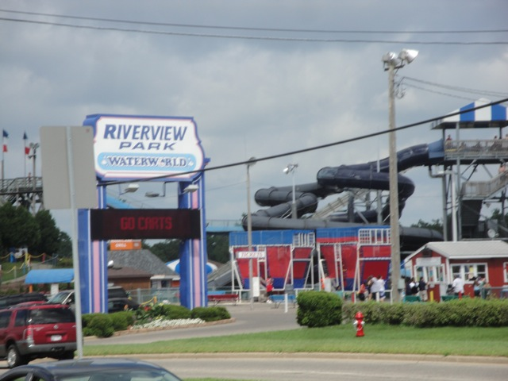
When walking over to the store to get my money and over to Timber Falls, I came across Riverview Park. They used to have credits. But now they got rid of them and it's now just a waterpark.
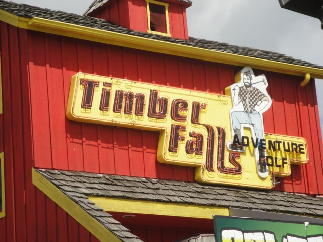
All right. Next stop is Timber Falls.
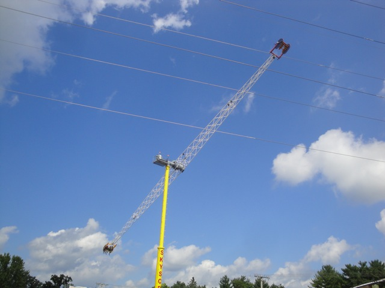
While they have a cool skyscraper here...
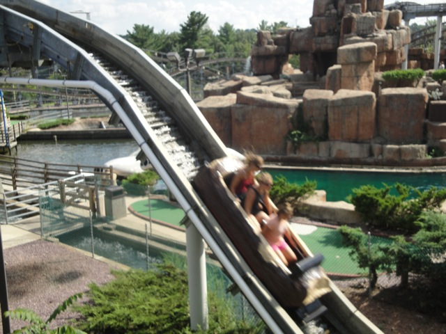
And this log flume doens't look half bad either...
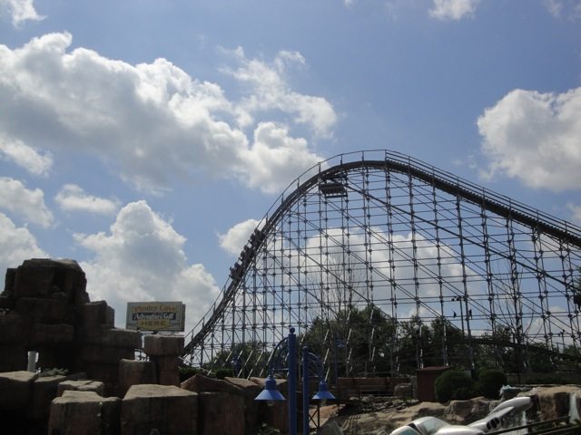
However, this is the real reason we came here.
 Yup. Turns out that we have ERT on Hellcat for 30 minutes.
Yup. Turns out that we have ERT on Hellcat for 30 minutes.
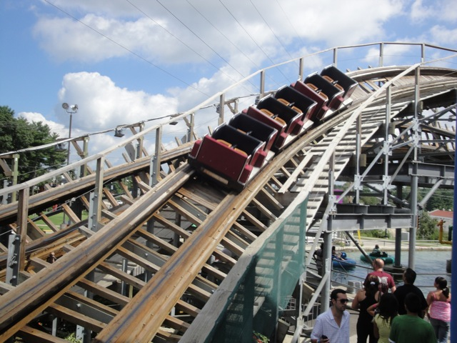
Hmm. Looks like a fun ride.
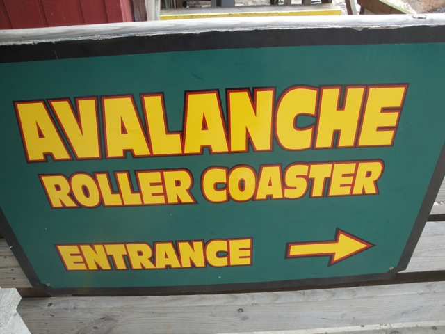
Hellcat was originally called Avalanche when it first opened, but then they renamed it to Hellcat for some reason, but they must have forgotten to take down the Avalanche Sign.
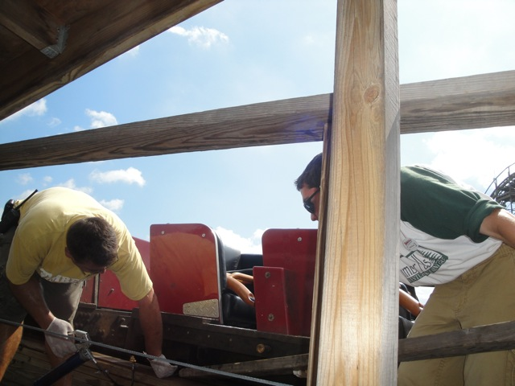
"Hey Bob, Looks like Incrediblecoasters has arrived with the Themeparkreview Group. What should we do?" "Remove the guide wheels so the car flys off the track in the turns. Then we'll never have to deal with them again." "But Bob, what if one of them survives and sues us? We'll be ruined." "You're right Lou. It's not worth the risk. Better leave those guide wheels on then."
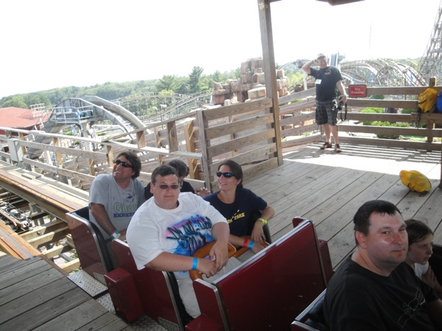
You guys ready to experience Hellcat?
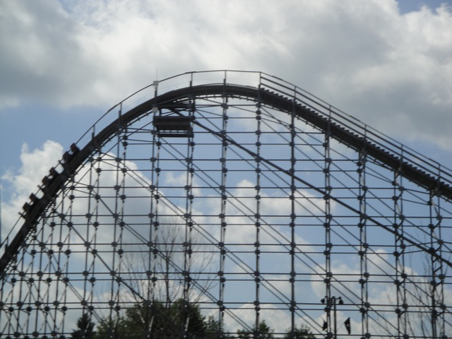
While Hellcat may be small...
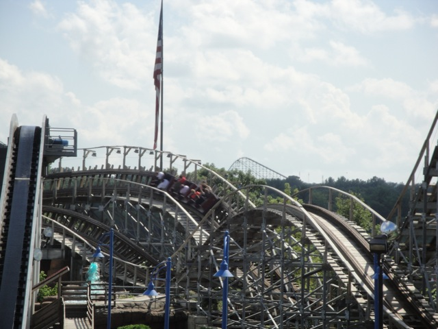
It packs quite a punch and is easily the best coaster in the Dells. Much better than that so called better coaster in the background.
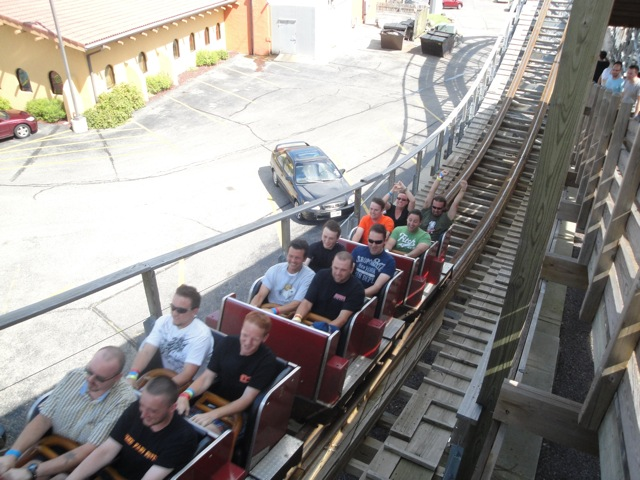
I'm suprised the train doesn't have any motion bluriness from the sheer speed of the ride in this picture.
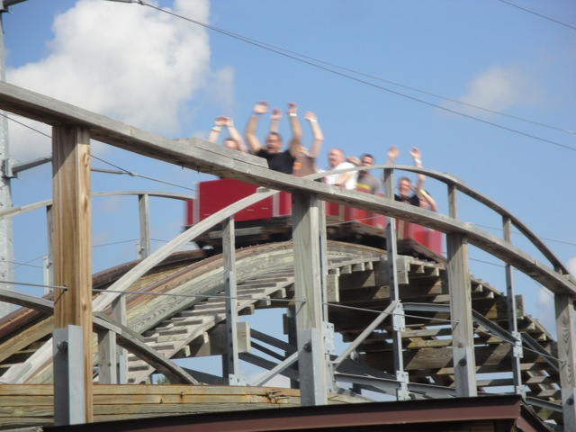
Let me tell you this now though. Hellcat is a brutal ride. It's a violent little sucker and it will SLAM you through all those turns. Do not go in expecting a smooth ride or else you will be sorely dissapointed.
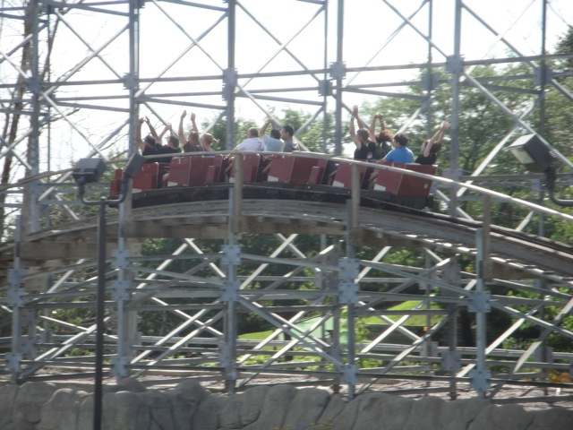
But it's so worth it for the speed and airtime and laterals that this ride has.
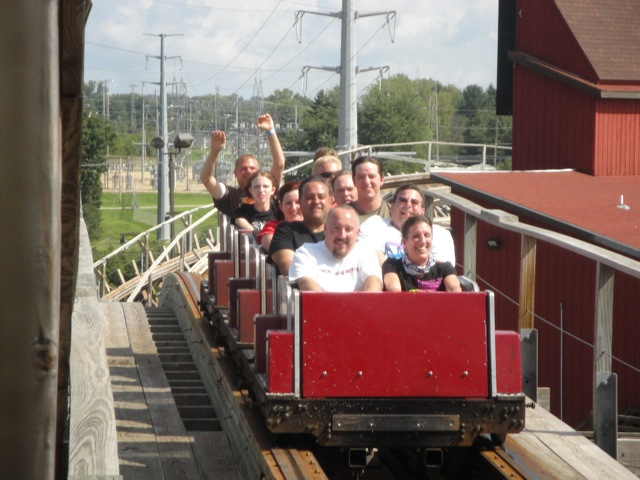
I just got the sh*t beaten out of me, and I loved it.
 And while that concludes our time at Timber Falls, we made a bonus stop at Knuckleheads. Why Knuckleheads you may ask?
And while that concludes our time at Timber Falls, we made a bonus stop at Knuckleheads. Why Knuckleheads you may ask?
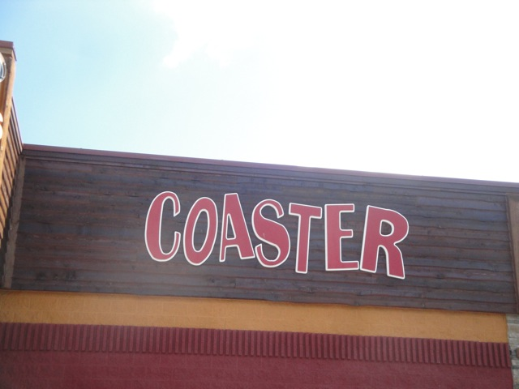
Yup. They have a credit here. It's credit whore time.
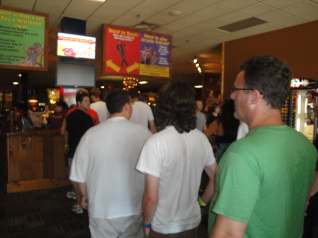
Would everyone who finds themselves sad and pathetic please get into a single file line please. Thank you.
 Yup. We're really going to ride this thing.
Yup. We're really going to ride this thing.
 Well, there goes the last shred of my dignity.
Well, there goes the last shred of my dignity.
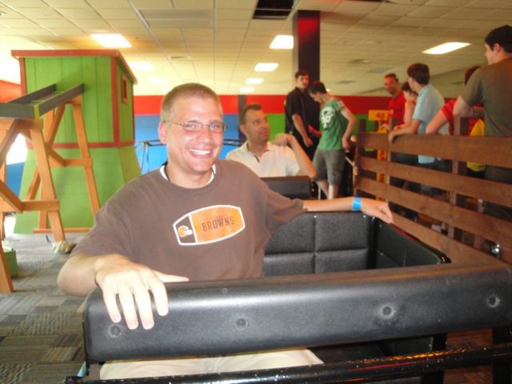
"I had no dignity to begin with."
 They've also got a tornado for those interested in the Knuckleheads Flat Rides.
They've also got a tornado for those interested in the Knuckleheads Flat Rides.
 And yes, Knuckleheads is also a bowling alley. So if you want the credit, just have a bowling night, then sneak off and get the credit you shameful secret dirty credit whore.
And yes, Knuckleheads is also a bowling alley. So if you want the credit, just have a bowling night, then sneak off and get the credit you shameful secret dirty credit whore.
Valleyfair
Home